|
¿Como crear una clase?
Para crear clases en java, lo primero que debemos saber es: ¿que es una clase?
Clase y Objetos en Java
Una clase es una plantilla para crear objetos, un objeto es la instancia de una clase. Cuando
se crea un objeto, este hereda todas las variables y metodos de la clase.
Crear una clase en Java
Para crear una clase en Java, el programa que utilice fue: "IntelliJ".
1). Se debe posicionar el cursor en el area donde se encuentra la clase Main.
2). Se debe presionar click derecho al area de las clases, y dar click en "new", y seleccionamos
Java Class.
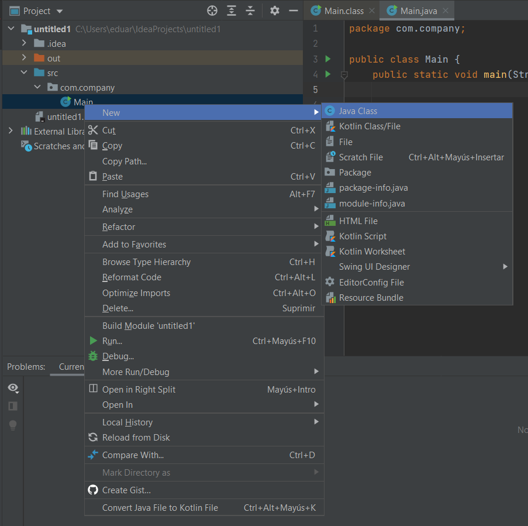
3). Ahora nos pedira un nombre para la clase que vamos a hacer. Lo colocamos y presionamos Enter.

4) Listo. tenemos nuestra clase creada, y ya podemos crear objetos o instancias dentro de
nuestra clase
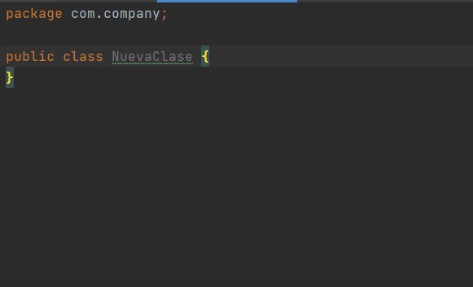
Crear una instancia en Java
Una vez creada nuestra clase, ya podremos crear instancias (obejos) dentro de nuestra clase
y poder llamarlas desde el metodo Main. Los objetos que se crearan, seran mediante encapsulamiento
que consiste en declarar los atributos privados, y los metodos publicos.
1). Entramos a la clase que creamos.
2). Luego dentro de nuestra clase creamos nuestros atributos o variables privadas.
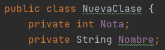
3). Luego procedemos a crear nuestros constructores, se puede copiar el codigo, o simplemente
con el atajo (alt + insert) seleccionamos la opcion constructor, y seleccionamos los atributos
a los que queremos crear los constructores.
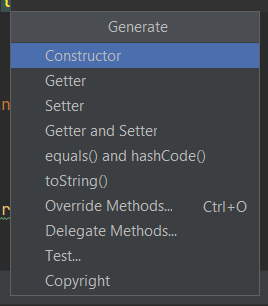
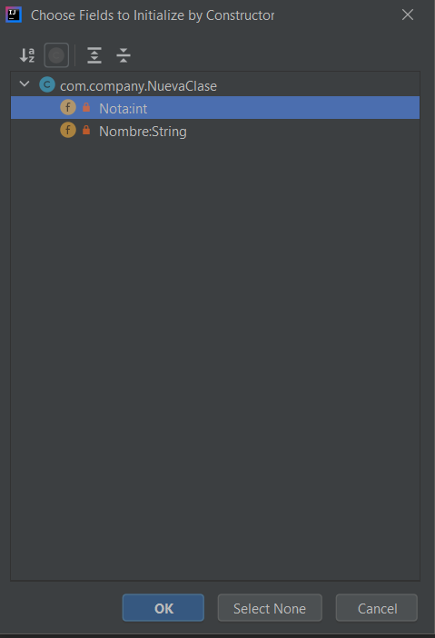
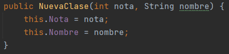
4). Luego cramos los "getters and setters", de la misma manera que creamos nuestros constructores.
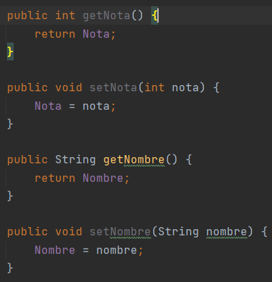
5). Listo, tenemos nuestro objeto, creado
Acceder a las instancias desde la clase main
1). Primero debemos acceder a la clase Main.
2). Debemos crear nuevo objeto de tipo "Clase" o tipo del objeto que creamos.

Dentro de los parentesis colocamos los valores que queremos asignarle a nuestro objeto,
depende de la cantidad de atributos que se le asignaron. En este caso se le asigno una nota
de 10, y el nombre de Manuel
3). Para mostrar los datos del objeto, se debe utilizar el codigo: "System.out.println()" y dentro
de los parentesis se coloca lo que queremos que muestre.
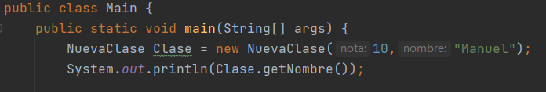
4). para modificar los valores de nuestro objeto "Clase" se deben utilizar los "Setter".
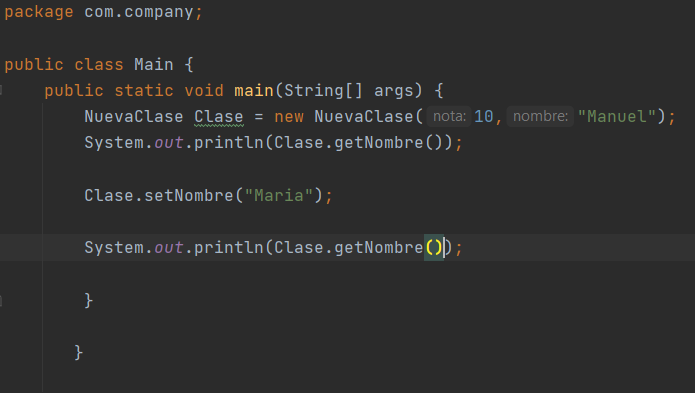
En este caso, se le asigno al objeto "Clase" el nombre de Maria. Luego se muestran los datos.
y nos da este resultado.
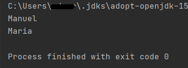
Utilizando metodos
en java se pueden utilizar metodos, el cual nos puede facilitar el orden al momento de escribir
nuestro codigo. En este caso, se crara un metodo, para que muestre el mensaje de : "Saco la nota de:"
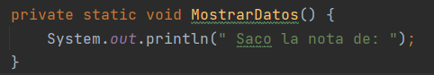
Implementando el metodo a nuestro codigo principal, nos quedaria asi:
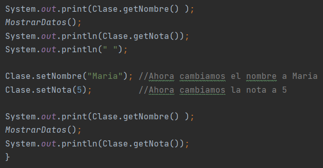
En este caso, se mostro en pantalla, el nombre asignado, y se llamo al metodo para mostrar el
mensaje escrito. Luego se llamo al dato de nota que se le asigno al objeto.
Luego se cambiaron los valores, y se volvio a mostrar en pantalla.
El resultado queda asi:
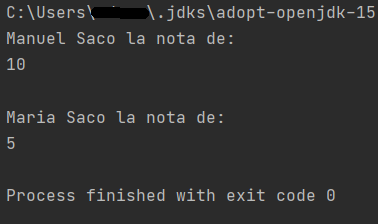
|